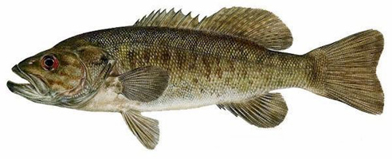
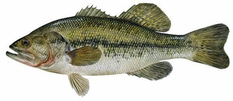
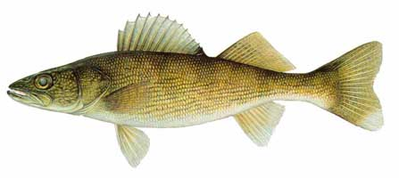
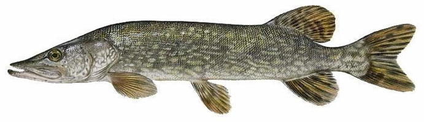
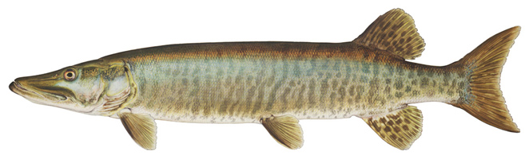

Crappie are less active during the day; they feed mostly at dawn and dusk.
The Crappie is also known as the strawberry bass, speckled bass (or "specks"), calico bass, papermouth, and sauc-au-lait (translation "bag of milk").
The Crappie is also known as the strawberry bass, speckled bass (or "specks"), calico bass, papermouth, and sauc-au-lait (translation "bag of milk").
The largest crappie ever caught weighed 6 pounds.
The largest crappie ever caught weighed 6 pounds.
Ideal spawning temperature is the low 60’s.
During spawning season, crappie and their nests will be in water approximately 1-5 feet deep.
Crappie have pure, flaky, white flesh that has earned them the reputation among anglers as the finest tasting freshwater fish.

Smallmouth Bass
Extremely young largemouth bass under 2 inches are known as "fry" and feed primarily on microcrustaceans and insect larvae.
A bass’ average lifespan is about 10-12 years.
Female smallmouth bass are usually larger than male smallmouth bass of the same age.
Bass reach maturity at the age of three or four.
The smallmouth bass has a number of aliases: smallie, red eye, green trout, brown bass, bronzeback, and bareback bass.
Smallmouth bass break the surface of the water and become airborne when hooked, oftentimes even performing flips, in an effort to break free.
The lines on the sides of a smallmouth bass fade with age.
Smallmouth bass do better in the wild than in captivity.
Smallmouth bass grow larger in lakes than in streams.
The world record bass was caught on July 9, 1955 and weighed 11 pounds 15 ounces and measured 27 inches in length.
Bass never stop growing; the larger the fish the older it usually is.
The natural predator list for a bass is larger bass, northern pike, and musky.

Largemouth Bass
Extremely young largemouth bass under 2 inches are known as "fry" and feed primarily on zooplankton and insect larvae. At 2 inches, they become active predators.
The largemouth bass has a number of aliases: the widemouth bass, Florida bass, black bass, bigmouth bass, bucketmouth bass, green bass, green trout, southern largemouth and northern largemouth.
Largemouth bass do better in the wild than in captivity.
A bass’ average lifespan is about 16 years, but have been known to live more than 20 years.
Largemouth bass have a highly attuned sense of smell, and can zero in on prey by following scent trails.
Female largemouth bass are usually larger than male largemouth bass of the same age.
Largemouth bass will often breach the surface of the water and become airborne when hooked in an effort to break free.
It is encouraged among anglers to release large specimens of largemouth bass, because the larger fish are usually breeding females that contribute to future fishing stock.
Largemouth bass are very aggressive fish, and are known to strike at nearly anything they consider alive.
Adult largemouth bass are usually solitary creatures, unless they are males guarding a brood swarm.
Adult male largemouth bass are responsible for preparing a nest, usually one to five feet below the water. Once the nest is built, a female will lay between 2,000 and 40,000 eggs, which the male will stay to guard over a week. When the babies hatch, they stay in the nest for a week.
Largemouth fry will stay in a school for three to four weeks, called a "brood swarm," which is guarded by their father.
The largemouth bass is the state fish of Georgia and Mississippi, official freshwater fish of Alabama and Florida, and the official sport fish of Tennessee.
A 5 pound bass is considered large to most anglers.
A swimming Largemouth Bass.
The world record bass was caught in 1932 and weighed 22 pounds 4 ounces. In 2009, the same size bass was caught in Japan to tie the record.
Bass never stop growing; the larger the fish the older it usually is.
The natural predator list for a bass is small. It mainly consists of walleye, muskie, and northern pike.
Because of light intensity, largemouth bass tend to be more active early and late in the day.

Walleye
The current world record walleye is 25 pounds and was caught in Tennessee in 1960.
Although the walleye is not related to the pike, they are sometimes known as “Yellow Pike.”
Baby walleye are called “fries.”
These fish are typically found in depths of 15 to 30 feet.
During the nighttime, walleye will come closer to the shore.
The oldest recorded age for a walleye was 29 years.
Walleye are ranked high in the food chain.
Walleye are known for their delicious and finely textured meat. They are the most sought after fish in many northern states.
Walleye is the state fish of Minnesota, South Dakota, Ohio and Vermont.
Walleye are believed to only see the colors red and green.
Walleye prefer cold water over warm water.

Northern Pike
The state fish of North Dakota is the Northern Pike.
The Northern pike is sometimes called other names: American pike, common pike, Great Lakes pike, jackfish, longhead, and snot rocket.
Pike are known as ambush predators.
Pike can lie perfectly still for a remarkable period of time.
Northern pike can swim 8-10 miles per hour.
The older the fish is, the larger it is.
Most pike over 18 pounds are female.
The world record pike was caught in Germany.
Pike do not make nests for their eggs.
Neither the male nor the female pike care for the eggs once they are laid.
The majority of the fry do not hatch successfully.
The “fries” continue to attach onto vegetation because of a sticky patch still on their head. This patch remains there for a couple of weeks.
The oldest pike in its natural habitat lived to be 25 years old.
The pike is not a picky eater.
Adult pike typically have no other predators than humans.

Muskellunge
The Northern Pike is oftentimes confused with the Muskie.
The world record Muskie weighed 67 pounds and 8 ounces. It was caught in Wisconsin in 1949.
Muskies have needle-like teeth.
Muskies sometimes form small schools.
Muskies are commonly fished for in the Northeastern United States and Canada.
The Muskellunge is the state fish of Wisconsin.
Adult muskies generally have no other predators than humans.
Neither the male nor the female muskie takes care of the eggs once they are laid.
.png)